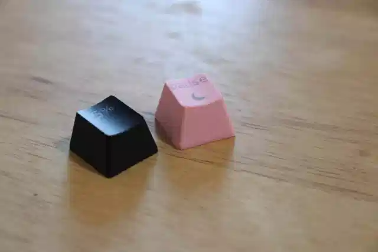

University of Keyboards |
|---|
Keycaps |
|
This is arguably the most fun part for most people, because the keycaps contribute so much to the appearance of the final product. In the world of keycaps, there is really two main material types you can get; ABS (Acrylonitrile Butadiene Styrene) and PBT (Polybutylene Terephthalate). You may be wondering, what the heck is ABS & PBT? Well, they are two different types of plastic with different property qualities. Both types of plastic have a different feel, sound, and look to them. |
ABS vs PBT Keycaps |
|  |
|
ABS keycaps are the cheapest and most common plastic used for keycaps. ABS keycaps are mass produced because of how easily they are injection molded. PBT plastic is less common but is usually higher quality than ABS. ABS keycaps feel smooth and develop a greasy shine over time, while PBT keycaps feel textured and are more durable. PBT are considered superior to ABS since they are more durable and wear down less over time. That being said, there are some really nice ABS keycap sets available, and at the end of the day it comes down to user preference. Some people prefer the smooth feel of ABS while others like the textured feel of PBT. |
|
|---|